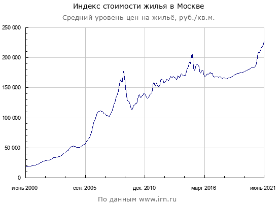
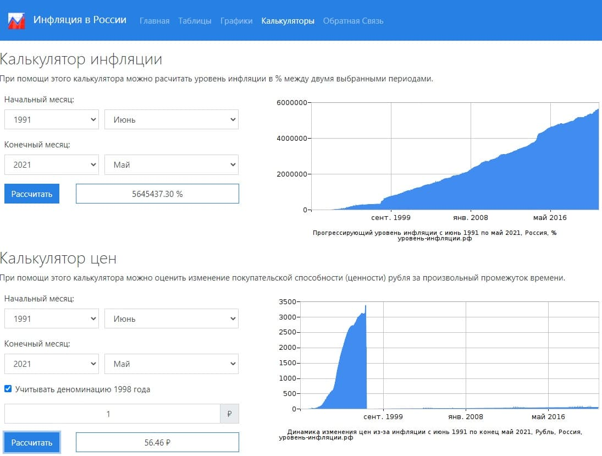
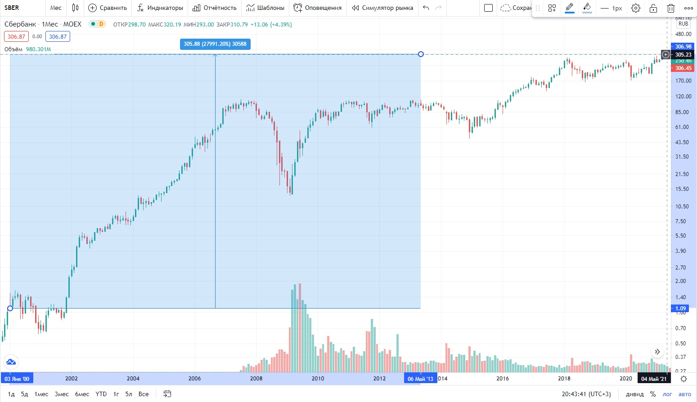
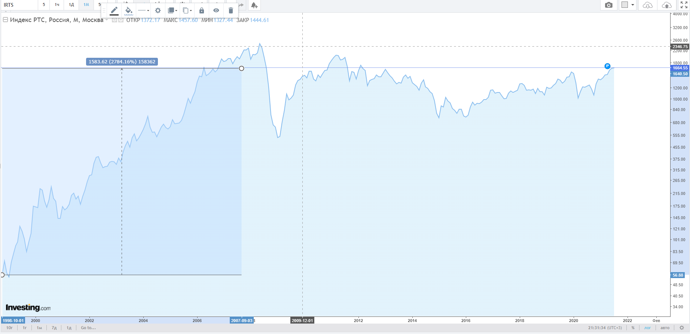

Статья о реальном положении дел, в отношении к недвижимости, или МИФ о владении недвижимостью - это лучшее вложение средств!
«Надо обязательно брать ипотеку!» - говорили они.
Я очень часто слышу много убежедений, касательно недвижимости, от разных категорий людей, будьто студенты или пенсионеры, предприниматели или рабочие, средний класс или бизнесмены и т.д.
Все говорят, что недвижимость растёт всегда в цене, что недвижимость не имеет ни каких рисков, что её можно оставить в наследство, что на крайний случай там можно жить и т.д.
Поэтому я решил обьединить все даные, которые есть в открытых источниках, с графиками и примерами, и ссылками на пруфы(достоверные ресурсы), а так же дам свои коментарии по всем этим пунктам.
Диапозон в 30 лет выбран не случайно, +/- мне сейчас столько лет, и к примеру на моё рождение родители купили мне квартиру, еще фактор, что графики максимально дают такой срок, ну и еще агрумент, если брать меньший тайм фрейм, то там показатели гораздо хуже и скептики скажутспециально подгадал.
Итак, пойдем по порядку:
1. Цена на недвижимость всегда растет!
-
- Если рассматривать динамику цены на недвижимость к доллару, то за 30
лет рост в 10 раз. рис.1

Как видно по графику, он падает последние 10 лет, и тенденцияк восстановлению не прогнозируется, если еще учесть курс рубля к $ 😪
-
- Если рассматривать динамику цены на недвижимость к рублю, то за 30
лет (графика за 30 лет не нашлось, прилагаю за 20, но предположим, что
цена стартовала от 10т.р.) рост в 23 раз. рис.2

Вот здесь видна положительныя динамика, но доходность c учетом инфляции мы расмотрим далее, но в целом чтобы говорить, что недвижимость всегда растет в цене, можно использовать это график, с оговорками по фрейду, так сказать.
Цены взяты с этого сайта.
-
- Инфляцию взял от
Сюда
рис.3

Это оф.сайт росстата, т.е. инфляция выросла по оф. данным в 56 раз, сомнений не возникает, неговоря уже про НЕ официальные данные, а реальное обстоятельство дел с потребительской способностью денег.
-
- к примеру мы вложили бы те же деньги в акции того же
Сбербанка. рис.4

Вложения увеличилсь бы в 279 раз!!! 😲 Ни с какой недвижимостью и рядом не стояли, и инфляция не помеха :) А еще Сбер платит дивиденты, которые не учитываются на графике (а это за 30, а нее...,не за 30, а всегото за 20лет, т.к. графика старше нету), их тоже бы накопилось бы несколько милионов рублей.
-
- даже просто рынок
РТС России
дал бы большую доходность, чем недвижимость. рис.5

Куда проще? Ни про какие Газпромы и Норникели не думешь, ни кого не выбираешь, весь рынок России!, а можно и лучше ведь есть "Голубые Фишки" (ну это уже бы была другая история...)
Итог
Да цены на недвижимость растут, но ценность ее очень завышена! Инфляция без учета девальвации рубля, просто жжесть, но и с учетом все равно инфляция гораздо больше, чем рост цены этой недвижимости.
А нас интересует не только сохранность средств, но и их приумножение, что рассмотрим ниже.
Так же оставлю ссылку 1 ссылку 2 ссылку 3 на вклады того времени. 70%-50%-40% годовых 😱
А теперь рассмотрим вложение средств в разные активы
2. В недвижимости нет никаких рисков
С этим готов посопорить:
- - Рейдерский захват, или другого рода мошеничство - никто не отменял (А снимая жильё, вам обсолютно побарабану на это, вы просто находите себе другое жильё.)
- - Затопили соседи, пожар, уроган и т.д. - тоже нельзя исключать (Снимая , вы просто находите себе другое жильё.)
- - Оч важный момент в содержании и поддержании должного качества(будь то ремонт или просто что-то сломалось). А снимая жильё, вы лишены этих затрат.
- - Расходы на комуналку и налоги (в инвестициях, если вы держите буману больше 3х лет, то освобождаетесь от налога, но на дивиденты налог все равно платится) А снимая жильё, вы лишены налогов на недвижимость.
- - Если не брать в расчет только Москву, страна у нас большая, то бывает и так что города вымирают, так что риск с выбором региона тоже есть, при сьёме жилья, вам неважно в каком городе вы захотите жить.
Итог
Владея долей в каком-нибудь бизнесе, Вы лишены этих рисков!
3. Недвижимость можно оставить в наследство
А акции разве нет? Тоже можно, без каких либо заморочек и дальнейших разбирательств между родственниками на наследство.
4. В недвижимости можно жить на крайний случай
Имея акции компаний, получая дивиденты, да и вообще имея такой большой запас денежного потока и средств, на кройняк можно в крутых хоромах жить! Ведь ни кто же не говорит, что владея долей в бизнесе, того же Сбербанка, вы так же имеете большое накопление средств, что гораздо выше цены недвижимости.
Здесь я изложил сугубо моё личное мнение и ни кого не призываю к финансовому действию, просто задумайтесь...
- Так ли хорошо владеть своёй недвижимостью?
- Выгодно ли брать ипотеку? и переплачивать за 20-30 лет(даже по 4% как сейчас доплачивает за Вас государство, вы все равно отдаете в 2 раза большую сумму, чем стоимость жилья). А эти деньги могли бы работать на вас.
- Как грамотно распорягаться своими деньгами?
Думайте... и обязательно богатейте!!!...